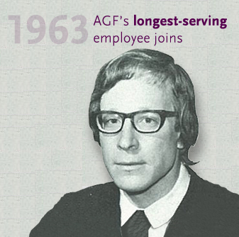
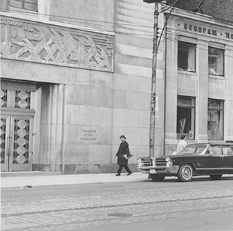
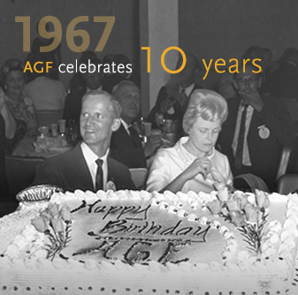
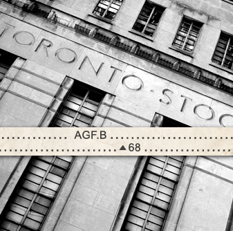

1960s
Unprecedented growth
-
From 1962 to 1973, Canada experienced the most sustained, broad-based, powerful spurt of economic growth in modern history.
Never before had average Canadians more money to spend and more money to save and invest.
- 
-
1962 AGF launches RRSP-eligible funds

August 15, 1962 – AGF launched Canadian Trusteed Income Fund*
October 22, 1964 – AGF launched Growth Equity Fund**
*Renamed AGF Canadian Bond Fund, which merged into AGF Fixed Income Plus Fund on May 20, 2016
**Now called AGF Canadian Growth Equity Class -
1965 AGF helps establish OSC
In January 1965, Warren Goldring was appointed to the Kimber Committee, the Attorney General’s Committee on Securities Legislation in Ontario, which contributed to the creation of the Ontario Securities Commission.
-

-
1968 AGF listed on stock exchange
Incorporated in February 1960, AGF Management Limited was listed on the Toronto Stock Exchange in 1968. At the time, AGF was ranked as the third-largest management company in Canada*
*Source: A Study of The Canadian Mutual Funds Industry, The Canadian Mutual Funds Association, 1969.
-
“At the end of 1969, AGF had $350 million in assets (12.4% of the industry) and 100,000 investor accounts.”